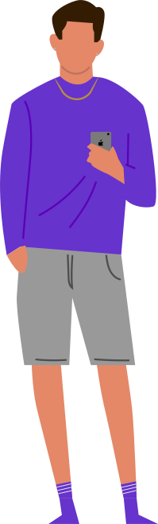

Olá, tudo bem? Me chamo Lucas Vidal!
Sou Desenvolvedor Web Full-Stack, estudante aficionado de UI/UX Design e graduando em “Análise e Desenvolvimento de Sistemas” pela FATEC São Paulo (6/6).
Em breve esse site terá mais conteúdo, te garanto. Mas enquanto isso, quer me conhecer melhor? Minhas redes sociais estão logo abaixo. Vamos interagir!
